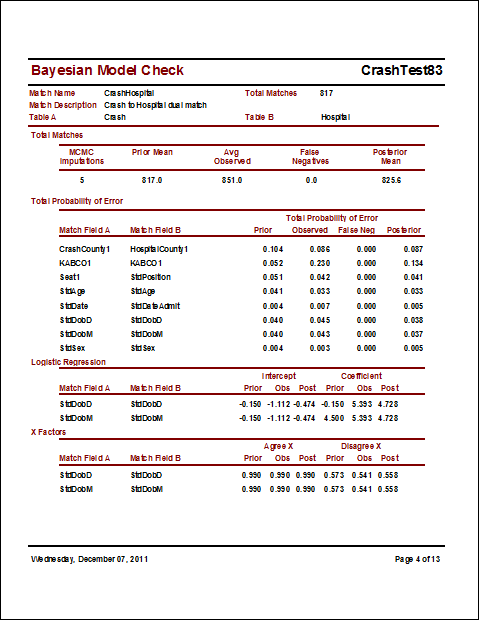

How to Check the Linkage Model
Any Bayesian model should be checked by testing whether estimates made using the fitted model are consistent with your prior knowledge. For record linkage using LinkSolv, all model parameters are estimated using the fitted model during each iteration of the Markov Chain Monte Carlo process, including Total Matches, Total Probability of Error for each match field, and Logistic Regression parameters for match fields with dependent outcomes. So, you should check whether observed values and posterior estimates of these model parameters are consistent with your prior estimates. These estimates are summarized in the Total Matches, Total Probability of Error, and Logistic Regression sections of the Bayesian Model Check Report. The estimates shown are averages of final-iteration values over all imputations. Match weights for agreements and disagreements of each match field are calculated using model parameters as are X factors for correcting weights for fields with dependent outcomes. Prior, observed, and posterior estimates for these quantities are reported as well even though they are not model parameters. Estimates for these quantities are shown in the X Factors and Match Weights sections of the report. The estimates shown are averages of final-iteration values over all imputations.

If you ran Tolerance Tests or OutcomeTests as part of the Review Match dialog then the test results are shown in the Tolerance Tests and Outcome Tests sections of the report. The estimates shown are averages of final-iteration values over all imputations. These test results can help improve prior estimates in future matches. Remember that these are estimates of observed values, not part of a full prior-observed-posterior Bayesian model.
A Markov Chain Monte Carlo iterative process has to reach stable values before you can trust the answers. This is referred to as convergence. The R-hat (or R^) test statistic measures convergence as described by Gelman and Hill, 2007. R-hat statistics are shown for Total Matches and Total Error Probability for each match field in the MCMC Convergence section of the report. Ideally, R-hat should be less than 1.1 for all model parameters but less than 1.5 is acceptable during model development. If any R-hat is greater than 1.5 after 20 or more iterations then you should investigate alternative models -- try to improve your prior estimates, investigate different compare methods and tolerances, look at simpler models with fewer tolerances and dependencies, select and link sample data with fewer records and fewer data quality issues, or create and link fake data similar to your real data.
If you create and link fake data then you can measure goodness of fit using the method recommended by Hosmer and Lemeshow for logistic regression models. The test is only valid for fake data. Test results are shown in the Goodness of Fit and Counts by Decile sections of the report. For the test, all merged pairs are sorted by estimated match probability and divided into 10 deciles. The expected number of true matches in each decile is the sum of estimated match probabilities. Fake data records are created so that true matched pairs have equal UniqueIDs. So, the actual number of true matches in each decile is the number of pairs with equal UniqueIDs. Actual counts are averages over all imputations. If the model fits the data then the distribution of expected counts by decile will be approximately the same as actual counts. The chi-squared p-value test quantifies the differences. A high p-value (say, greater than 0.05) indicates that apparent differences in decile counts could easily have happened by chance from the same distribution. Deciles with expected counts less than 5 are not included in the chi-squared p-value test. The goodness of fit test does not measure whether a linkage is complete, only whether calculated match probabilities are accurate for all merged pairs found.